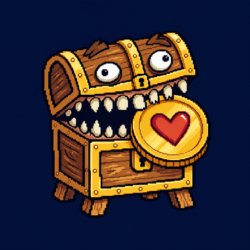

Page Visual Optimization · Phase 1
Maskable Icons
Maskable exact hashes approved. Dedicated complete-character artwork, separate from the approved Install / Favicon composition.

80% safe zone
雙眼、完整牙齒、主要箱體與整枚心形硬幣均需保留在中央圓形安全區。粉紅虛線只存在於 review page，不會寫入 PNG。
Rounded square
Squircle
Aggressive crop
maskable-master
maskable-512
SHA-256 7f9c937516e8bf30ef6ddbfbb0d513932bf317b82badfacafca557c22061c441
maskable
maskable-192
SHA-256 834a3812fd56ef0803fcef33412cbbbfebcd6c3200203314d75299eff03859b8
Approved Install / Favicon context
Install / Favicon 保留金色方框並使用單一 master 縮放。Maskable 是獨立、無外框、安全區優先的完整角色構圖；兩者不互相覆寫。
Source SHA-256 90b040d9c9073fc390f4e61a90562b9730fd974018cfff9d8a715dd7b2674952Square opaque PNGPlatform shapes shown here are mask preview only; no mask is baked into either PNG.
Review-onlyAll files stay outside web/public; no runtime asset changes.
Gate remains openMaskable and complete Icons calibration are approved; Gate A remains open for the other asset families.